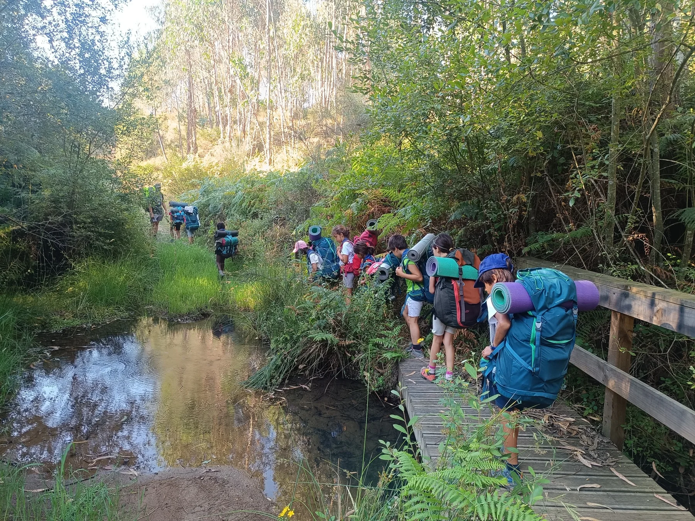
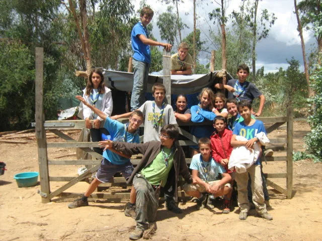
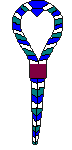
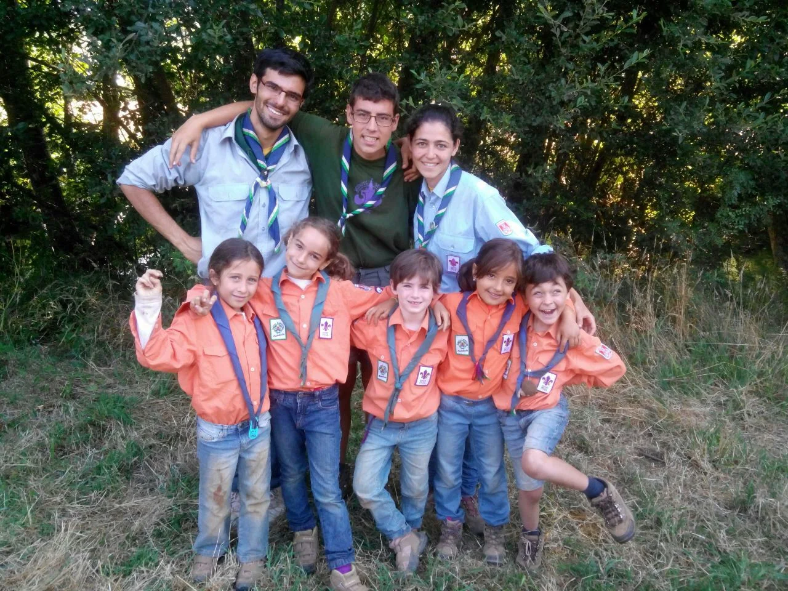
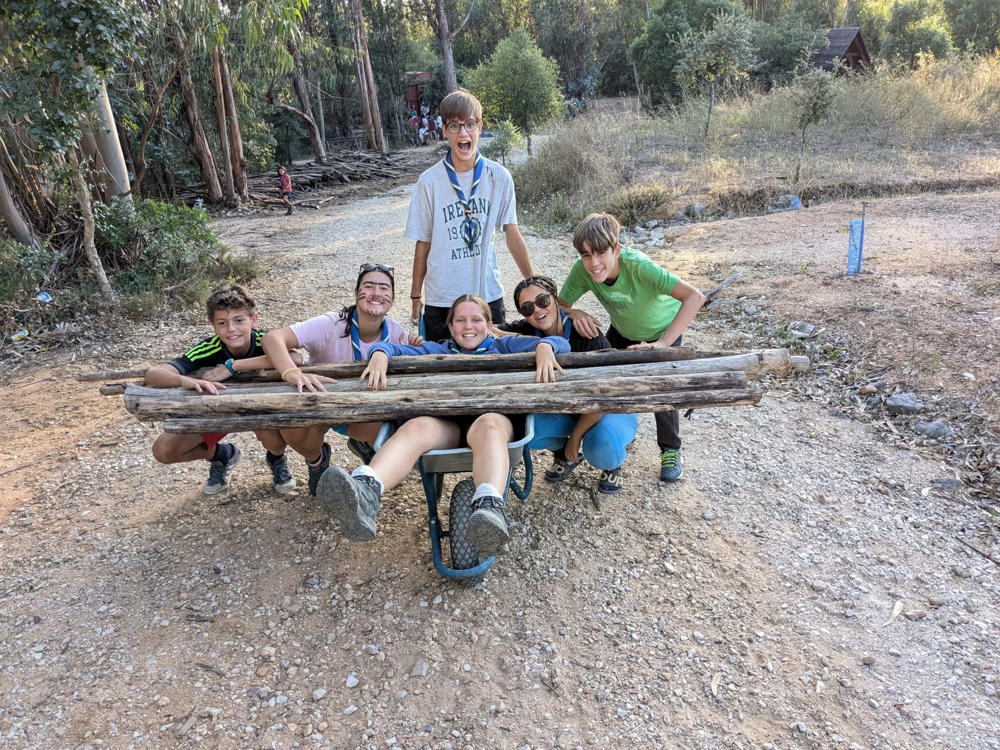

Su propio camino
Los niños, niñas y jóvenes expresan sus intereses y participan en la elección de sus actividades, con más autonomía en cada etapa.

GRUPO SCOUT XXIII · SEVILLA
Escultismo: Amistad, naturaleza y compromiso.
Una forma de descubrir el mundo y de dejarlo en mejores condiciones de cómo nos lo encontramos.
01 / NUESTRA HISTORIA
Somos el Grupo XXIII - El Porvenir, y pertenecemos a la federación de escultismo católico de España. Un espacio para aprender, compartir y crecer como individuos.
Nacimos en el verano de 1994 a partir del Grupo X – Heliópolis. Desde entonces, la amistad, el servicio y la vida en la naturaleza dan sentido a nuestro camino.
Vinculados a la parroquia de San Sebastián, vivimos el escultismo católico como una propuesta educativa que acompaña a niños, niñas y jóvenes en su desarrollo personal y en su compromiso con los demás.

Lo que vivimos nos une.LOS COLORES DE NUESTRA HISTORIA

La hoja de roble de nuestro símbolo representa la fortaleza.
02 / CÓMO EDUCAMOS
El escultismo es educación no formal. El juego, los proyectos y la convivencia se convierten en oportunidades para ganar autonomía, descubrir capacidades y cuidar de los demás.
Los niños, niñas y jóvenes expresan sus intereses y participan en la elección de sus actividades, con más autonomía en cada etapa.
Aprendemos a escucharnos, tomar decisiones y asumir responsabilidades. Cada persona aporta algo al grupo.
Las rutas, acampadas y campamentos nos enseñan a convivir, superar retos y respetar el entorno.
Los responsables scouts guían el aprendizaje desde el ejemplo, el servicio y la atención al progreso personal.
Desarrollo físico · intelectual · emocional · social · espiritual · personal
Responsabilidad, entorno y fe. Trabajamos el cuidado de uno mismo, el compromiso con la comunidad y la dimensión espiritual, desde nuestra identidad cristiana y los valores del Evangelio.
03 / CADA EDAD, UNA AVENTURA
Nos organizamos en ramas para adaptar las actividades y el acompañamiento a cada momento del crecimiento. Selecciona una para conocerla.
DE 6 A 8 AÑOS
«Compartir»
¿La Colonia Tierra del Fuego tiene algo que decir? La primera aventura scout. En la colonia descubrimos lo que significa compartir, convivir y dar nuestros primeros pasos con autonomía, a través del juego y de pequeñas experiencias en equipo.

Detrás de cada aventura, un equipo.
El kraal es el equipo de responsables que acompaña a las ramas y pone en marcha el proyecto educativo.
04 / VIDA SCOUT
Una mochila, un equipo y ganas de descubrir. Nuestra aventura se construye con pequeños momentos y experiencias compartidas.

Nos solemos reunir los sábados por la mañana (de 10:00h a 13:00h), donde tenemos una reunión por ramas (iniciamos el círculo juntos, y cada rama se va por el parque MªLuisa o por el barrio, para hacer una actividad, dinámicas o trabajar el proyecto de rama.
Acampadas, campamentos y rutas adaptadas a las ramas para aprender a convivir y cuidar del entorno.
La solidaridad y el compromiso con los demás forman parte de nuestro proyecto educativo.
Las canciones de la gramola, las veladas, los lemas y hasta nuestro pollo a la mermelada forman parte de la memoria del grupo.
05 / NUESTRO ÁLBUM
Una mirada a las aventuras del grupo a lo largo de los años. Abre las fotografías para verlas con más detalle.
ANTES DE DAR EL PRIMER PASO
Si te queda alguna duda, escríbenos.
Nos encantará conocerte.
Nuestro proyecto se organiza en Castores (6–8 años), Lobatos (9–11), Rangers (12–14) y Pioneros (15–17). Escríbenos para consultar la incorporación a la rama correspondiente.
Nos solemos reunir los sábados por la mañana (de 10:00h a 13:00h). Nuestro local está en C/ Peñalara, 3, en Sevilla, y estamos vinculados a la parroquia de San Sebastián. Contacta antes de venir para confirmar el horario y el punto de encuentro de la próxima actividad.
Envíanos un correo indicando la edad y tu consulta. El equipo te informará sobre plazas, incorporación y próximos pasos. La disponibilidad y las condiciones se confirman directamente con el grupo.
A través del juego y de proyectos adaptados a cada edad, trabajamos la autonomía, la convivencia, el servicio y el desarrollo personal. Las actividades se preparan con la participación de los propios niños, niñas y jóvenes.
Sí. Estamos vinculados a la parroquia de San Sebastián. La fe y la dimensión espiritual forman parte de nuestra propuesta educativa, junto con el cuidado personal y el compromiso con la sociedad.
Escríbenos un correo si estás interesado en formar parte como responsable (monitor) o de alguna otra manera. La secretaría del grupo te explicará las posibilidades de incorporación (o colabroración) y todo lo necesario.
06 / EL CAMINO EMPIEZA CON UN HOLA
Para conocer el grupo, consultar plazas o colaborar,
ponte en contacto con nosotros.
VEN A CONOCERNOS
Local: C/ Peñalara, 3 · Sevilla
Parroquia de San Sebastián